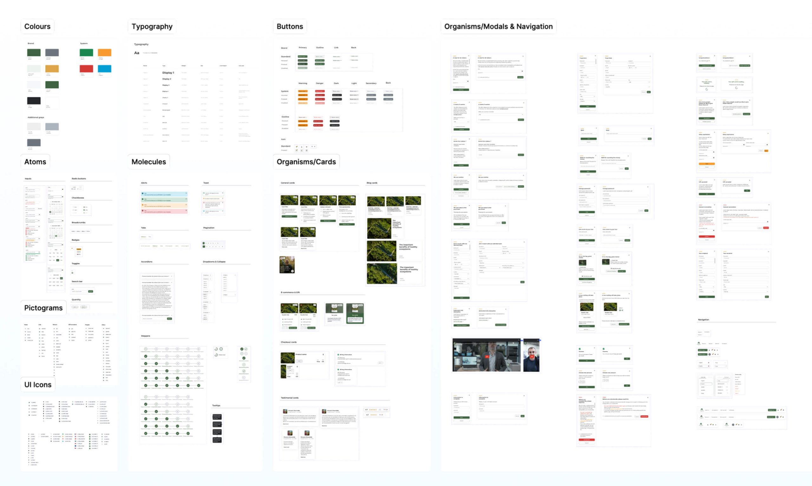
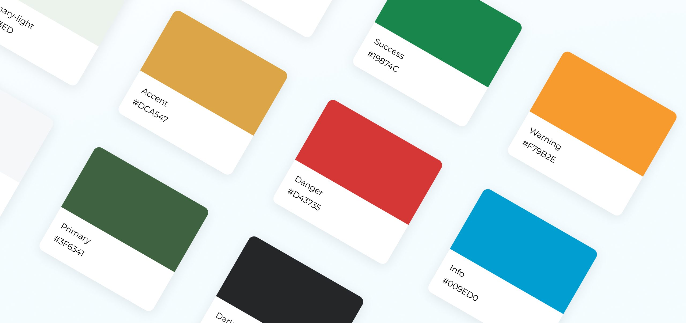
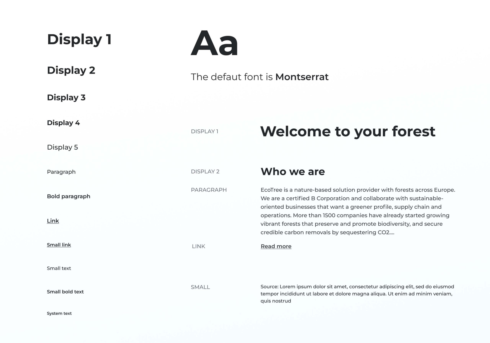
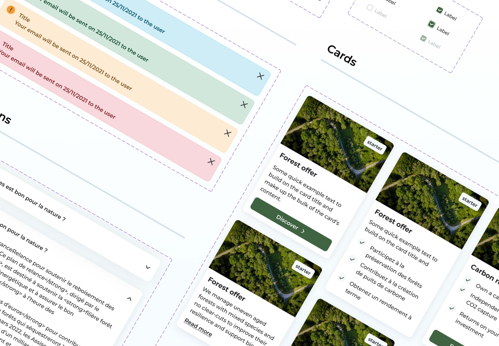
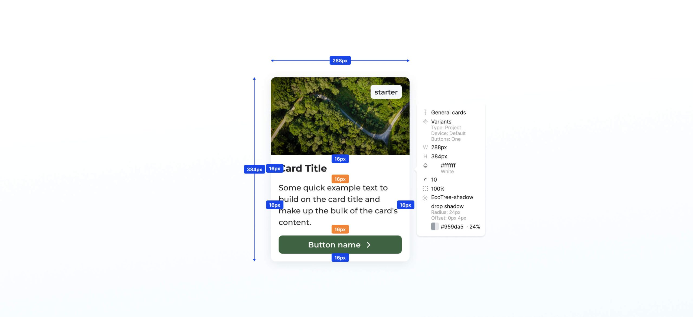
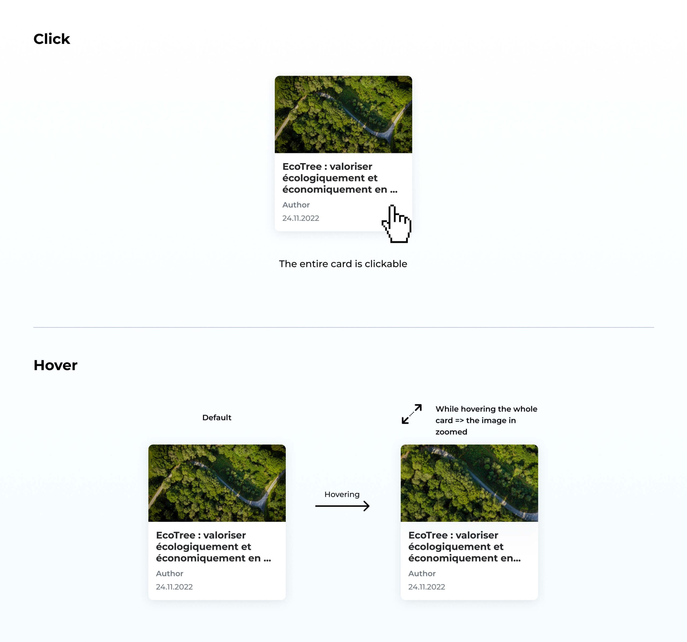
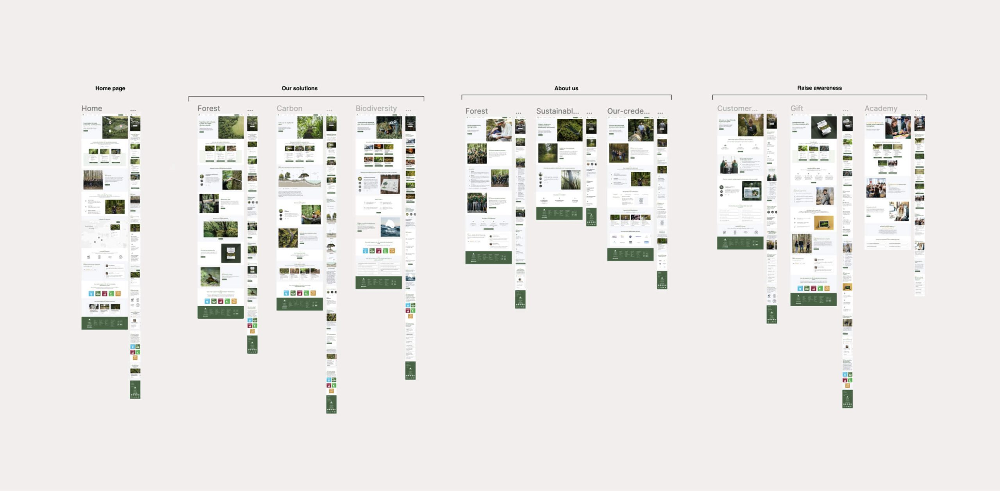

A scalable, Atomic Design-based component library that became the shared language between design and development across EcoTree's products.

Impact
EcoTree lacked a shared visual language. Designers and developers worked from inconsistent references, which led to duplicated work, mismatched UI, and slow handoffs. As the design team grew and more product surfaces emerged, the need for a proper system became critical.
I led the creation of the EcoTree Design System — a centralized library built on Atomic Design principles, covering everything from raw design tokens to full page templates. The goal was to create something developers could actually use, not just a polished Figma file that stayed disconnected from production.

The system was built to be complete enough that a designer joining the team could be productive from day one, and specific enough that developers didn't need to interpret intent.
Color, typography, spacing, and radius — all defined as named variables. Tokens are the foundation everything else inherits from.
Montserrat type scale with Display 1–5, Paragraph, Bold, Link, Small, and System styles — covering every content context in the product.
100+ responsive components organized as atoms, molecules, and organisms — from buttons and inputs to cards, notifications, and full page layouts.
Documented hover states, click behaviors, and transitions so developers had clear specs — not just static designs — to implement from.
Montserrat was chosen for its clarity at both large display sizes and small body text. The scale is named semantically — Display, Paragraph, System — so designers pick by role, not by arbitrary size numbers.

The palette uses semantic naming so intent is always clear. Each token communicates purpose — not just a hex value.
#3F6341
#DCA547
#19874C
#D43735
#F79B2E
#009ED0
The library follows Atomic Design: atoms are the smallest indivisible pieces, molecules combine them into functional units, and organisms are complete UI sections ready to be composed into pages.
Auto-layout and pixel-perfect measurements meant developers could inspect components and know exactly how they should behave — dimensions, padding, corner radii, and spacing were all explicit.



The system went beyond components — it included a full library of page section templates showing how organisms combine into real product surfaces. This closed the last gap between design and implementation.

This wasn't a top-down system designed in isolation. We built it while shipping real products, which meant it was tested against actual product needs from the start.
Catalogued every component in use across the dashboard and website — identified duplicates, inconsistencies, and gaps that were silently slowing the team down.
Before touching a single component, we locked down the token layer — color, spacing, radius, and type. Every decision above it inherits from here.
Started with atoms, assembled molecules, composed organisms. Each level was validated before the next was built — no skipping ahead.
Added interaction guidelines, spacing specs, and behavior notes alongside every component. The goal was a Figma file developers could work from independently.
The system was immediately stress-tested on the B2B website redesign and the client account dashboard — two very different surfaces with different content needs.
A design system is a product, not a deliverable. It needs maintenance, versioning, and buy-in. The biggest risk is building it once and letting it drift from the products it's meant to serve.
Tokens are the hardest part to get right. Every naming decision you make at the token level ripples through the entire system. Getting semantic naming right early saved a huge amount of rework later.
Developer trust is earned through specificity. A spec sheet with pixel measurements and interaction states gets adopted. A beautiful Figma file with no annotations does not.
Build alongside a real product. Designing a system in isolation produces theoretical components. Building it while shipping the B2B site surfaced real-world edge cases we would have missed otherwise.